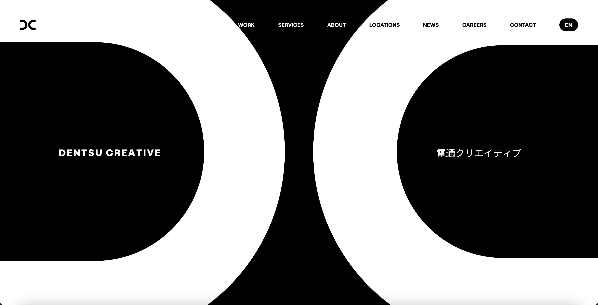
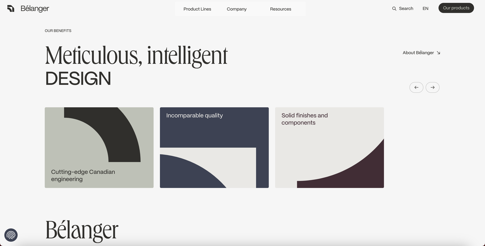
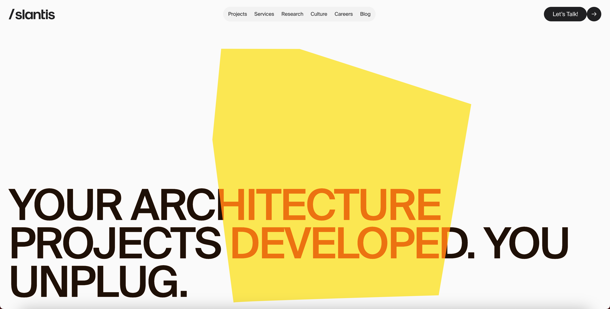

Premios Awwwards
De los premios Awwwards he seleccionado la página web de Nida Tabba entre los nominados por su estilo único, su dinamismo al hacer scroll y el uso de la tipografía y el uso del color. También destaca que al iniciar la página te encuentras con una animación de movimiento, que te acompañana a lo largo de todas las pantallas de la home page.

Webby Awards
En cuanto a los Webby Awards he seleccionado esta web por sus animaciones dinámicas, que generan fluidez ya que al ir haciendo scroll estas van apareciendo, además de su estética minimalista, que pone mucho más enfasis en las animaciones.
The FWA Awards
De entre los nominados de los FWA Awards la página web que he elegido es Belanger Faucets, una web muy bien estructurada y minimalista, que pese a esto, hace que destaque de entre el resto por su diseño meticuloso e inteligente.
CSS Design Awards
Slantis, es una web para contactar con arquitectos para que desarrollen tus proyectos, donde cada vez que haces scroll hay una animación que te acompaña. Además el uso del amarillo hace que sea mucho más única y peculiar, lo que hace que destaque entre el resto.
